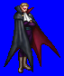
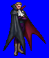
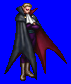
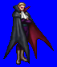

Height: Human height Weight: Human weight
Habitat: Graveyard, haunted castle Origin: Europe
Meaning: Turkish for "witch/warlock"
An undead monster that drinks the blood of the living. There are many legends of vampires, but the most famous is that of the Transylvanian vampire Dracula. In general, one who is killed as a result of a feeding vampire becomes a vampire himself. In addition to sucking blood, vampires have the ability to turn into bats. Its weaknesses are many, including sunlight, crosses, and garlic.